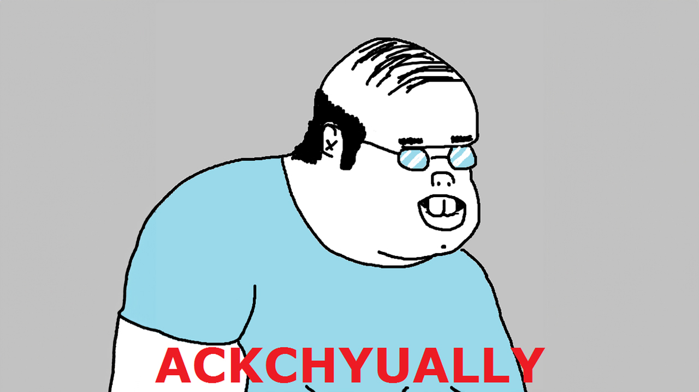

Experiment · Vibecheck hackathon
Imagine a game of chess where each piece moves itself. 2 teams of 16 players.
Can a swarm of agents cooperate well enough to win? Does a RULES.md keep them in line? Or do the rules need formal verification?
Foy Savas · @foysavas
→ to advance · S for speaker notes · ? for every key
The players
Each turn a team agrees on a plan: the best move its engine finds. Then any agent with the chance to slip does, about one time in ten.
A threatened piece runs, whatever the plan says.
pawn_b7 That queen is looking right at me on b5, I’m not waiting around, I’m going!
A piece that can capture grabs the most valuable piece in reach.
queen_d1 calm nothing, that e5 pawn is just sitting on my diagonal, I’m grabbing it
The piece the plan calls on forgets it, and makes some other move.
pawn_g7 Wait, what was the plan again? Pretty sure it was me charging ahead two squares…
Each agent is named for its piece and home square, and a language model speaks as it.
Game 1 · no rules
The usual fix
aka the state of the art in agent compliance 🙃
RULES.md
The rule our RULES.md teams play with, from the first move.
Result · does it help?
What we built
1 · Predicates, in Lean
Facts the checker uses about predicates come with Lean proofs.
2 · Rules, in temporal logic
always, next, until: a rule speaks about every commit from the one that adds it on.
3 · Enforced. Every action is a commit, checked against every rule before it counts. A commit that would break one is refused, and the refusal names the predicate that failed.
Result · the disappointing part
In conclusion
Thank you for coming to my TED talk.

In the real world, shit happens. 💩
A rogue is one compromised agent on a team. From move 5 it plays its worst move every turn, and ignores every rule.
Result · one rogue a side
An FV Contract move needs 10 of 16 signatures. The rogue has 1.
Result · what one rogue costs
Rogue against rogue, the FV Contract wins 145 games to 78.
Share of points over 256 games each, a draw counting half, each tool playing White in half. RULES.md: 111–32–113 without a rogue, 81–34–141 with one. FV Contract: 113–32–111, then 108–36–112.
All the data · click a cell
—
——
—
Each pairing appears once, below the diagonal. Clearly ahead or behind: wins and losses differ by more than chance would give at 95% confidence, draws set aside.
A fair question
No. A controller agent can go rogue too, and then every move goes through the rogue. One agent becomes a single point of failure for the whole team: far more centralized risk, not less.
How it’s built
Signed commits, predicates, an LTL model checker, and model synthesis.
Proved in Lean, including refutes_sound: a label the predicate theory rules out is met by no commit.
The model checker against exact evaluation of every lasso trace.
From scratch, byte for byte with OpenSSL. The experiments use a fast signing oracle.
The chess engine is exact on perft and matches python-chess.
Claude voices every agent through the claude CLI.
Real Conclusion
Rules that hold whether or not every agent follows them.